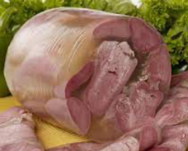

Head Cheese
You ever hear about "Head Cheese"?

It's not cheese. It's the scraps, the leftovers, the parts nobody else wants.
Ingredients
- One pig's head. Cut it in half. Get to know it.
- Pig's tongue. Optional.
- A couple of onions. The cheaper, the better.
- Carrots? Sure, why not.
- 2 cloves of garlic. Crushed.
- Bay leaves. Two of them.
- Some mix of herbs. Like a bouquet.
- 10 peppercorns. Black, round, and bitter.
- Cloves, 6. The spice, not the cigarette.
- Salt, for all those wounds. 15 grams per liter.
- Gelatine. If you can't wait for the real thing.
Recipes instructions
- Throw that pig's head in water. Watch it boil, bubbles rising.
- In goes everything else. The onions, the carrots. Let it simmer. Slow.
- When it's all soft and falling apart, pull it out. Slice it up. Pour the leftover liquid. It's all a mess, but it's your mess.
- Cool it down. Slice it up. Drink a beer, or a whiskey, or both. Eat.
Head Cheese. Hell, you make do with what you got.
---
Return to main page